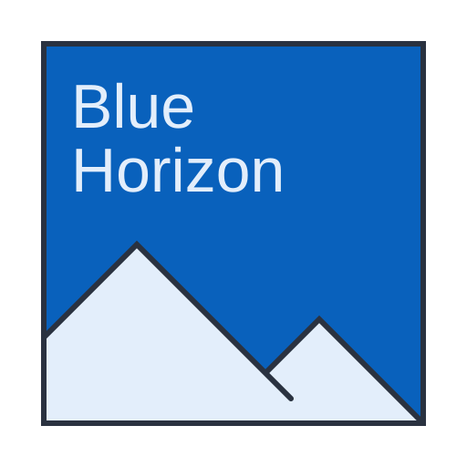

Blue Ledger
An append-only, signed, hash-chained record of every event across the supply chain. It lives inside your own environment — only the sealed Logbook slices you authorise ever leave it.
Prove every batch. Capture the low-CI premium. Industrialise compliance.
Blue Horizon gives Sustainable Aviation Fuel producers a single platform to make every batch independently verifiable, route it into the best-paying regime, and run compliance across jurisdictions as one workflow.

Three regulations are coming into force at once across the EU, UK, and international aviation. They all reward producers whose fuel has a low carbon intensity — and they all ramp up fast over the next five years.
EU buyers now ask for evidence well beyond ISCC certification. Today producers assemble it by hand from spreadsheets and email, slowing every deal — and one fraud finding on a peer can taint prices across an entire origin country.
Low-CI SAF is worth hundreds of euros per tonne more under ReFuelEU, UK RTFO and CORSIA. Without a system comparing regimes batch by batch, producers default to the familiar one and leave significant money on the table.
Every new export market means a new manual workflow. Compliance teams can't keep up as production grows and jurisdictions open — staff spend their time on paperwork instead of closing deals.
Aviation is one of the hardest sectors to decarbonise — and SAF is its primary lever. For that market to work, a low-carbon claim has to be trustworthy, verifiable, and fairly rewarded.
Our mission is to be the trust and optimisation layer beneath sustainable aviation fuel: so producers can prove their climate impact instantly, get paid for it properly, and so every tonne of SAF counts exactly once toward a cleaner sky.
Blue Horizon captures what happens on the ground, computes what each batch is worth under every regime, and produces a single sealed record buyers and auditors can verify for themselves.
An append-only, hash-chained log of feedstock, process, and lab data — signed where it's created and anchored externally, so history can't be quietly rewritten.
Per-batch CI under ReFuelEU, UK RTFO and CORSIA, with live reference pricing — surfacing the best-paying route and the premium left unclaimed.
Every batch produces a Logbook — a cryptographically sealed digital record any counterparty can verify independently, without trusting you or us.
An ISCC Proof of Sustainability is a summary claim signed by the producer. A Logbook is the evidence graph underneath it — signed at origin, cryptographically linked, and verifiable by any counterparty in seconds. It stays valid even if Blue Horizon is offline.
Each capability stands on its own and compounds with the others — from raw plant data to a buyer-ready, regime-optimised claim.
An append-only, signed, hash-chained record of every event across the supply chain. It lives inside your own environment — only the sealed Logbook slices you authorise ever leave it.
Per-batch carbon intensity under every regime you qualify for, with live reference pricing. Prism quantifies the premium left unclaimed on past production and recommends the best route for every new batch.
A single compliance workspace across ReFuelEU, UK RTFO and CORSIA: PoS issuance and retirement, calendar and notifications, executive views and board-ready reports. One workflow, every jurisdiction.
Blue Horizon is built by a team of senior professionals who have built regulated financial platforms, delivered sustainability reporting at industrial scale, and shipped institutional-grade cryptographic infrastructure — combining the data, carbon-market and security expertise this problem demands.
Deep data-engineering and data-science capability, with first-hand experience inside the aviation industry and in delivering CSRD sustainability reporting at industrial-energy scale — spanning regulated reporting, ETL and analytics delivery, and multi-actor policy analysis.
Senior engineering leadership across fintech, banking and carbon markets — including building and scaling a subscription carbon-markets platform on high-availability infrastructure, and replacing decades of banking legacy with modern financial systems.
Institutional-grade security and cryptographic engineering — building custody and tokenization infrastructure inside the FCA Regulatory Sandbox, backed by a consortium of global banks, with patented work in multi-agent key management.
Data engineer and data scientist with direct aviation-industry experience (ex-KLM decision support, ex-ING). MSc Data Science in Engineering (TU Eindhoven), MSc Engineering & Policy Analysis (TU Delft). Delivered CSRD sustainability reporting at global industrial-energy scale.
Technology executive with 25+ years leading engineering across fintech, banking and carbon markets. Ex-CTO at Clear Blue Markets (carbon-markets fintech, 99.9% uptime); led a ground-up financial-calculation system at ING Wholesale Banking. B.Eng. (Portsmouth), CTO certificate (Wharton).
Currently CTO of Tranched, a private-credit tokenization platform. Previously senior engineering and architecture roles across institutional payments at ING, HQLAx tokenisation and Pyctor custody — inside the FCA Regulatory Sandbox, backed by BNP Paribas, State Street, UBS and SG-Forge. Co-inventor of a US patent in multi-agent key management. MSc Computer Science.
Whether you're a producer preparing for ReFuelEU and CORSIA, a buyer tightening due diligence, or a partner in the SAF value chain — we'd like to hear from you.